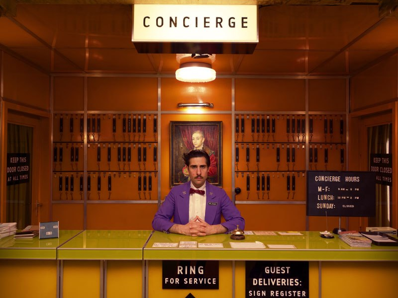
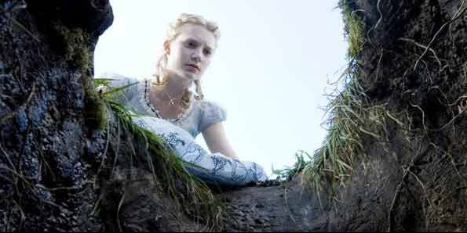
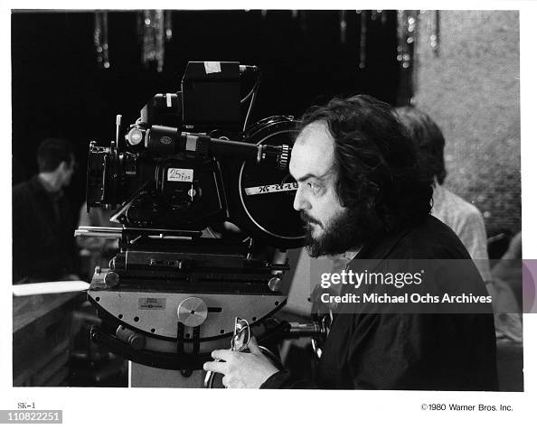

Existem diversos fatores dentro da fotografia de um filme que trazem as emoções, as cores a composição e movimento da câmera... Vamos explorar cada um deles
Talvez seja conhecimento comum, porêm cada cor, seu tom e intensidade nos levam a sentir algo, um sentimento que acontece inconcientemente ao vê-lá.
Por exemplo a cor vermelha, pense em um sentimento que você relacionaria a ela, raiva? paixão? terror? Todos juntos?, esse é o objetivo! É uma das principais estratégias usadas No cinema
Filmes que focam nessa estratégia seriam:

Esse é o perfeito exemplo da teoria de cores no cinema, La la land é uma explosão de cores com simbologia e emoções em seu potencial máximo
A personagem principal, Mia, é uma atriz fracassada veste principalmente azul, com sua vida monótoma e calma. Ela conheçe Sebatian, Vermelho, vindo de sua paixão e personalidade exêntrica, um sonhador que é apaixonado por Jazz, que espera reviver esse estilo de música nas ruas. Quando começam a se conhcer o branco predomina, e na sua União o Roxo aparece em ambos. A intensidade das cores também tem um grande papel, cores mais apagadas aparecem em sua queda e momentos mais deprimidos.... Sem spoilers, em?

Wes Anderson (diretor) usou a cor para mostrar constraste, falta de pertencimento, linha do tempo alternativa e personalidade.
Exemplo:


Os elementos em si de cada cena e cada take são, dependendo da meticulosidade do diretor, cauculados e planejados, se for o objetivo dar poder ou mostrar a superioridade/controle de algum personagem ou coisa, a câmera é posicionada por baixo, e o foco é filmado de baixo pra cima, quando queremos mostrar que um personagem se sente.. em paníco, um momento em que precisa pensar só consigo mesmo, se usa o close-up para focar em suas expressões faciais.
Outro motivo para a escolha de certas composições com a câmera é a identidade do diretor, ou da obra em particular o meu exemplo para isso são e o caso anteriror são:

Filme de 1939, acompanhava a vida de uma garota jovem de família nobre, mimada, que sofre os horrores da guerra Ele explora como o ser humano pode mudar e o que no desespero nos levamos a realizar. Nesta cena Scarlet acha uma cenoura e com fome come direto da terra, naquele momento testemunha jue jamais passaria fome novamente, mostrando sua força na hora e um futuro superação e luta.

Ele usa muito de simetria, procura apresentar todos os elementos em um único take, usa de simetria e formatos geométricos como identidade própria e reconhecível.